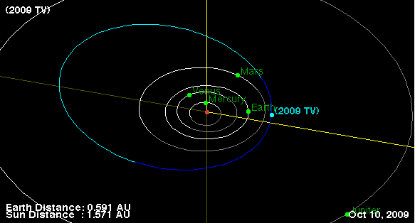

D21 Shenton Park discovers a new Mars Crosser - designated 2009 TV. The object was discovered on October 8th, and confirmed shortly after by our sister station 926 (Tenagra Arizona). 2009 TV is kilometer-sized object at magnitude 18.4. At its closest approach it gets to within 1.56 AU from the sun, and has a relatively high eccentricity of 0.41.
Thanks to Paulo's pipeline for picking this one up, and the help of Tenagra Arizona in confirming the discovery.
Predicted orbit (courtesy of the JPL Small-Body Database Browser):
